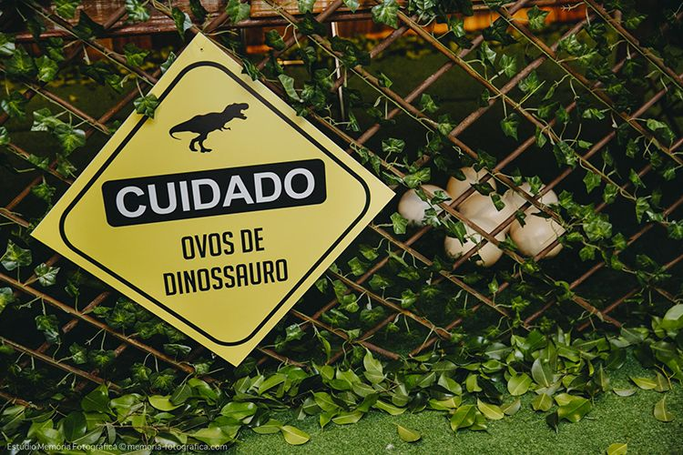
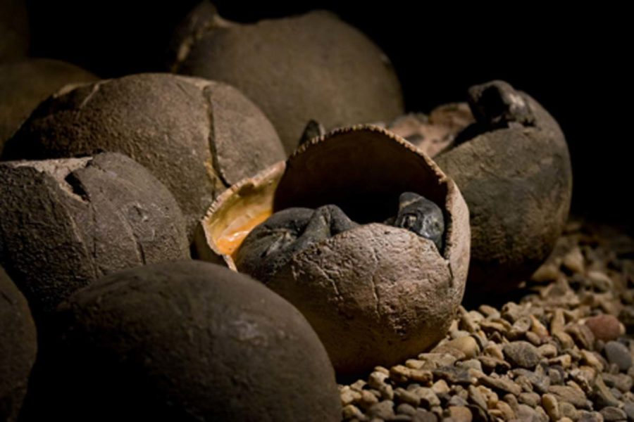
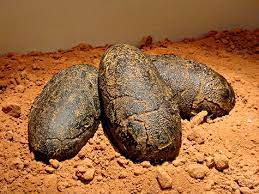
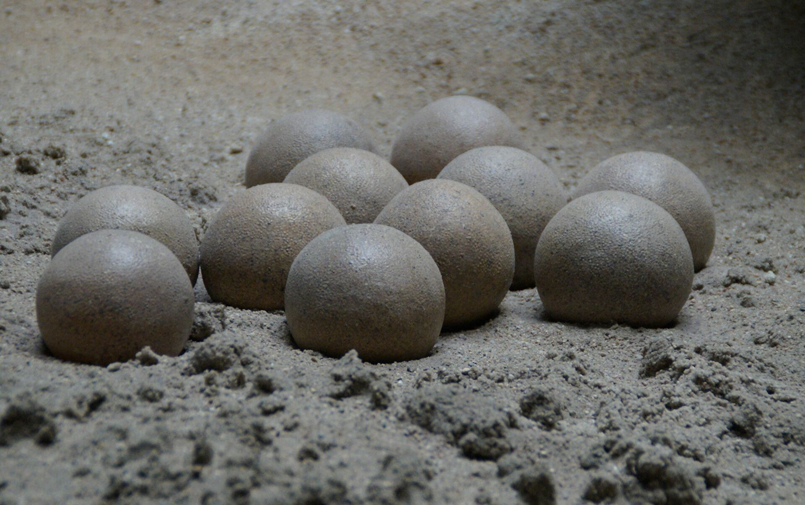

A primeira descoberta verdadeira de um ovo de dinossauro aconteceu em 1859
num lugar no sudeste da França, por Jean Jacques Pouech. Eram de pássaros
gigantescos. Ovos mais preservados foram encontrados em 1869 por Matheron.
Ele acreditava que eram de crocodilos gigantes.
Em 1877, Paul Gervais publicou o primeiro estudo detalhado desses ovos,
sugerindo que poderiam ser de dinossauros. Atualmente são identificados
como do grupo Saurópodes, da espécie chamada Hipselossauro.
A estrutura dos ovos consistem em uma série de unidades verticais que crescem em determinados
locais da superfície da casca. A organização dessas unidades determinam a sua classificação, que podem
ser esferulíticas ou prismáticas:


